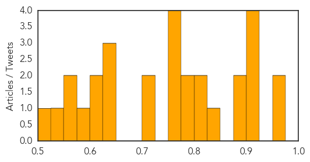
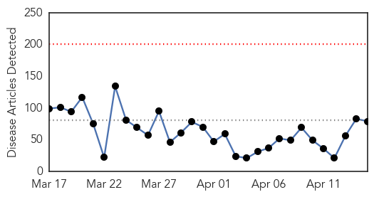

Influenza
30-Day Web Trend
0 alerts, 0 warnings

30-Day Twitter Trend
1 alerts, 0 warnings

Article Locations

Article Confidences
Top Articles:
- 0.972
- Bird Flu Returns to India
- 0.953
- DATCP implementing response to contain, eliminate avian influenza virus
- 0.922
- More Wisconsin farms released from avian flu quarantine
- 0.921
- Vets encouraging dog flu vaccine after Illinois outbreak
- 0.918
- Dog flu bites Midwest, causing concern among local vets
- 0.909
- Veterinarian Explains What Every Dog Owner Should Know About Disease
- 0.895
- Wisconsin Veterinary Diagnostic Lab monitoring bird flu outbreak
- 0.884
- Dog Flu Outbreak Worsens in Midwest
- 0.833
- Eight more cases of bird flu confirmed; threat could last years
- 0.824
- Bird flu: 60,000 chickens culled in Telangana in two days
- 0.813
- Chicago canine influenza epidemic traced to Asian strain
- 0.799
- Dog day care businesses hit by canine flu
- 0.786
- Minnesota officials: Bird flu threat could last years
- 0.772
- Bird flu outbreak in Thimphu camp city
- 0.754
- The Ducks Are Dying
- 0.751
- April 14, 2015 Archives
- 0.751
- April 14, 2015 Archives
- 0.722
- Avian flu outbreak triggers alert in Telangana
- 0.715
- Eight more cases of bird flu confirmed
- 0.644
- Bird flu outbreak could head eastward with fall migration
- 0.644
- Bird flu outbreak could head eastward with fall migration
- 0.634
- Dog flu spreading in the Midwest
- 0.616
- State chicken industry feels aftershocks
- 0.603
- Dog flu worries rise as infections increase in Midwest
- 0.582
- H5N2 Avian Flu Case Confirmed in Iowa County - Story
- 0.574
- H5N2 avian flu confirmed in Iowa
- 0.555
- Bird flu in Iowa turkey flock; sixth Midwest state
- 0.539
- Turkey growers look for end of influenza
- 0.518
- H5N2 strikes 8 more Minnesota farms, reaches Iowa
Top Tweets:
- 0.811
- Clinical findings in 10 children of H275Y influenza A(H1N1)pdm09 virus infection http://t.co/vJoLMBbMfr
Ebola
30-Day Web Trend
0 alerts, 0 warnings

30-Day Twitter Trend
0 alerts, 0 warnings

Article Locations

Article Confidences

Top Articles:
- 1.000
- Doctor returns home after Ebola battle
- 1.000
- Northland DHB Doctor Returns From Midst of Ebola
- 1.000
- As Ebola Retreats, Obama Urges Vigilance and Preparation in West Africa
- 1.000
- Fresh Ebola scare in Lagos rattles hospital
- 1.000
- Obama says Ebola-fighting goal is to prevent any new cases
- 1.000
- Practice Safe Sex, WHO Warns Ebola Survivours
- 1.000
- Ebola vaccine starts testing in Sierra Leone
- 0.999
- Obama Hosts Heads of Ebola-Stricken Nations as Schools Open
- 0.999
- iafrica.com Ebola virus found in semen 6 months later
- 0.999
- US CDC starts trial of Canadian Ebola vaccine - National
- 0.998
- Schools reopen in Sierra Leone as Ebola threat recedes
- 0.998
- President Obama Meets With West African Leaders To Talk Ebola
- 0.998
- Sierra Leone Schools are Back after Several Months of Ebola Outbreak
- 0.998
- Ebola survivors 'safe sex warning' issued by WHO
- 0.998
- WHO issues 'safe sex warning' to Ebola survivors
- 0.997
- Obama meets African leaders to pledge Ebola fight support
- 0.997
- Obama meets with African leaders to assess progress against Ebola
- 0.996
- Young people played a game-changing role in the battle against Ebola in Liberia
- 0.996
- US CDC starts trial of Canadian Ebola vaccine
- 0.996
- Lessons learned after Ebola
- 0.995
- Obama: 'Major progress' in fight against Ebola
- 0.994
- Obama says Ebola-fighting goal is to prevent any new cases
- 0.994
- Mali: Ebola Preparedness Fund - Emergency Plan of Action (EPOA): Appeal n° MDRML011 - Mali
- 0.994
- US backs plan for Africa’s disease control centre
- 0.993
- Ebola Still a Danger
- 0.993
- Ebola Virus Found in Semen Six Months after Recovery — Naharnet
- 0.992
- Ebola virus found in semen six months after recovery, WHO advocates safe sex 'until further notice'
- 0.991
- Obama: World must remain ‘fully engaged’ against Ebola
- 0.989
- Sierra Leone schools reopen after long closure due to Ebola
- 0.989
- West and Central Africa Region Weekly Humanitarian snapshot 7-13 April 2015 - Central African Republic
- 0.988
- 04 UF researchers inform development of Ebola vaccine trials University of Florida
- 0.985
- CDC: Ebola Vaccine Trial To Begin In Sierra Leone
- 0.984
- UF researchers inform development of Ebola vaccine trials
- 0.983
- No Fresh Case Of Ebola In Lagos – Daily Times Nigerian Newspaper
- 0.981
- Health authorities report 1 confirmed Ebola case in Liberia, previously declared Ebola free
- 0.977
- VP Foh on social mobilization drive in Bo
- 0.977
- Ebola-Hit Sierra Leone Goes Back to School – Daily Times Nigerian Newspaper
- 0.975
- New Jersey spent $2.6 million on Ebola monitoring
- 0.973
- Ebola monitoring costs in New Jersey since October: $2.6M
- 0.971
- Obama pledges continued help in Africa's Ebola fight
- 0.970
- U.S. Agrees to Help Launch 'African CDC'
- 0.966
- VP Foh on social mobilization drive in Bo
- 0.963
- CDC helps African Union launch African CDC
- 0.963
- Sierra Leone schools re-open after Ebola closed for 9 months
- 0.946
- Modern Healthcare Modern Healthcare business news, research, data and events
- 0.946
- With UNMEERs assistance, How Magazine Cut Community is Fending off Ebola
- 0.943
- UN Urges Sierra Leone to Let Pregnant Students Return to School
- 0.943
- UN Urges Sierra Leone to Let Pregnant Students Return to School
- 0.941
- Ebola: Lagos dispels rumours of new cases
- 0.941
- Forklifts to Sierra Leone to tackle Ebola crisis
Showing top 50 articles...
Top Tweets:
- 0.979
- Health Officials: Ebola Monitoring Has Cost New Jersey $2.6 Million - CBS Local http://t.co/L9fc3ZXbz5 ebola EVD
- 0.957
- Rapid RiskAssessment: Outbreak of Ebola virus disease in WestAfrica, 14 April 2015 http://t.co/8VuH4C5Qkf
- 0.950
- RT: With Ebola subsiding, Liberia & Sierra Leone plan to close treatment units. @WHO reports 37 cases in wk to April 12. h…
- 0.919
- CDC takes another large step in responding to Ebola. STRIVE Ebola vaccine trial starts in Sierra Leone. http://t.co/RCwlSMdNEx
- 0.915
- With Ebola subsiding, Liberia & Sierra Leone plan to close treatment units. @WHO reports 37 cases in wk to April 12. http://t.co/RSLgq5uZPc
- 0.910
- As Ebola Retreats, Obama Urges Vigilance and Preparation in West Africa - New York Times http://t.co/4Sz7ZCCR1q ebola EVD
- 0.890
- Guinée Fiche d’info n°7: Situation de l’épidémie à virus Ebola, 06 - 12 avril 2015 http://t.co/D3uUdVBPvF
- 0.870
- Stigma and the Ebola Outbreak | @cdcgov http://t.co/YZqjs4tc6v
- 0.869
- Obama's day: Ebola, working families - USA TODAY http://t.co/riqLqeSjOy ebola EVD
- 0.867
- Privilege to testify b4 Reps Cole, DeLauro & comm on Ebola. Bipartisan support 4 CDC's work protecting Americans & stopping Ebola at source.
- 0.832
- Liberia Audit Report Questions $673000 in Ebola Spending - ABC News http://t.co/81BTKCR88U ebola EVD
- 0.814
- Evaluating ClinicalTrial Designs for Investigational Treatments of Ebola Virus Disease http://t.co/kTJ5tlmEt0
- 0.806
- Today's news pouch avianflu avianinfluenza Ebola EbolaResponse MERS http://t.co/ym9GlGqjnX
- 0.803
- Significant drop of Ebola cases in West Africa but control efforts still needed. @ECDC_EU updated Risk Assessment: http://t.co/j41Kvj2VRJ
- 0.791
- Vilgilance at Liberian border keeps deadly Ebola virus at bay http://t.co/Lml0L1lPul
- 0.775
- Robust and sustained immuneactivation in human Ebola virus infection | @pnasnews http://t.co/SJPTcCRW8h
- 0.737
- Ebola survivors 'safe sex warning' - BBC News http://t.co/qTICBh006p ebola EVD
- 0.725
- The Ebola Prediction Score - A new way to predict who needs to be admitted for Ebola and who may not: http://t.co/mcEg5dMYiM
- 0.706
- Ebola survivors 'safe sex warning' issued by WHO - BBC News http://t.co/oAC6XtG2b9 ebola EVD
- 0.652
- Merck, NewLink Ebola Vaccine Enters Third Phase III Study - http://t.co/dHKFn8tP29 http://t.co/sKTmHmz2et ebola EVD
- 0.644
- Gallery: Charlotte's ebola survivor - Charlotte Observer http://t.co/5QvvU5wB95 ebola EVD
- 0.628
- .@BarackObama is meeting with presidents of Guinea, Liberia, and Sierra Leone today to discuss progress against Ebola. Continue the fight!
- 0.626
- Stephen Seckor, Ebola survivor in Liberia https://t.co/3lx7IzwWLa
- 0.594
- Because of the risk of reintroduction from SL or Guinea? I would think Liberia would like to be declared Ebola free, non?
- 0.588
- A total of 37 confirmed cases of Ebola reported in the week to 12 April, compared with 30 the previous week: @WHO http://t.co/ELv92uGwWH
- 0.575
- Assessment of integrateddiseasesurveillance and response on suspected ebola cases, Brong Ahafo Region, Ghana http://t.co/Jm6WH7P29c
- 0.533
- Video. Comment installer un laboratoire - Ebola @CroixRouge http://t.co/1BbX99wd9V